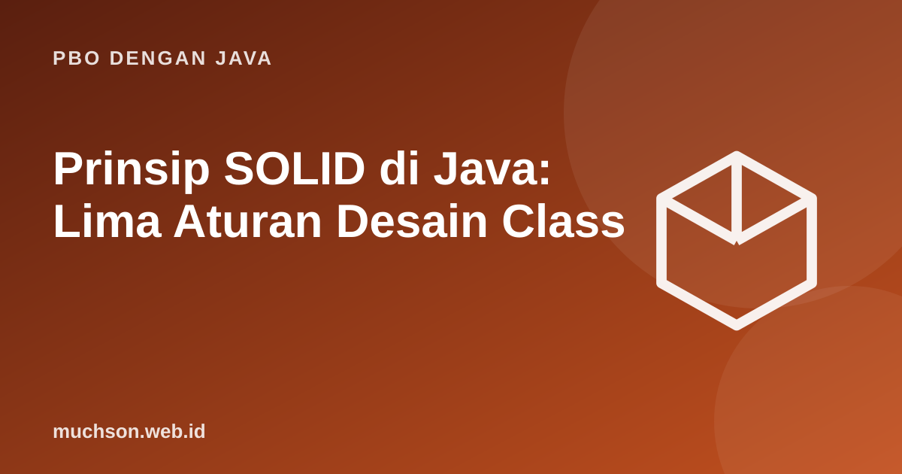

Beranda › Artikel › PBO dengan Java
PBO dengan JavaPrinsip SOLID di Java: Lima Aturan Desain Class
Fitur PBO memberi alat; SOLID memberi arahan memakainya. Lima prinsip ini muncul dari pengalaman bertahun-tahun merawat perangkat lunak besar: bagaimana membuat kode mudah diubah tanpa merusak yang lain. Kita pelajari masing-masing lewat contoh yang buruk lalu diperbaiki.
Sebaiknya sudah paham: inheritance, interface, polimorfisme

Setelah membaca dan mencoba materi ini, Anda mampu:
- menyebut dan menjelaskan lima prinsip SOLID
- mengenali pelanggaran masing-masing dalam kode
- melakukan refactoring dengan interface dan komposisi
- menimbang manfaat dan biaya prinsip desain
S: Single Responsibility
// SEBELUM: satu class melakukan tiga hal (perhitungan, tampilan, penyimpanan)
class LaporanGajiBuruk {
double hitungGaji(double pokok, double tunjangan) { return pokok + tunjangan; }
String formatTeks(String nama, double gaji) { return nama + ": Rp" + String.format("%.0f", gaji); }
void simpan(String teks) { System.out.println("[disimpan] " + teks); }
}
// SESUDAH: tiap class punya satu alasan berubah
class KalkulatorGaji { double hitung(double pokok, double tunjangan) { return pokok + tunjangan; } }
class PemformatLaporan { String format(String nama, double gaji) { return nama + ": Rp" + String.format("%.0f", gaji); } }
class PenyimpanLaporan { void simpan(String teks) { System.out.println("[disimpan] " + teks); } }
public class Main {
public static void main(String[] args) {
double gaji = new KalkulatorGaji().hitung(5_000_000, 1_000_000);
String teks = new PemformatLaporan().format("Ani", gaji);
new PenyimpanLaporan().simpan(teks);
}
}[disimpan] Ani: Rp6000000
O: Open/Closed
import java.util.List;
// SEBELUM: setiap jenis diskon baru mengubah method yang sama
class HitungDiskonBuruk {
double diskon(String jenis, double harga) {
if (jenis.equals("member")) return harga * 0.1;
else if (jenis.equals("hariRaya")) return harga * 0.2;
return 0; // jenis baru? ubah method ini lagi
}
}
// SESUDAH: jenis baru = class baru
interface Diskon { double hitung(double harga); }
class DiskonMember implements Diskon { public double hitung(double h) { return h * 0.1; } }
class DiskonHariRaya implements Diskon { public double hitung(double h) { return h * 0.2; } }
class DiskonMahasiswa implements Diskon { public double hitung(double h) { return Math.min(h * 0.15, 50_000); } } // tambahan tanpa menyentuh kode lama
public class Main {
static double totalDiskon(List<Diskon> daftar, double harga) {
double t = 0;
for (Diskon d : daftar) t += d.hitung(harga);
return t;
}
public static void main(String[] args) {
System.out.println(totalDiskon(List.of(new DiskonMember(), new DiskonMahasiswa()), 200_000));
}
}50000.0
L: Liskov Substitution
Contoh klasik: Persegi sebagai turunan Persegi Panjang tampak masuk akal secara matematika, tetapi melanggar harapan pemakai kelas induk.
class PersegiPanjang {
protected int lebar, tinggi;
void setLebar(int l) { lebar = l; }
void setTinggi(int t) { tinggi = t; }
int luas() { return lebar * tinggi; }
}
class Persegi extends PersegiPanjang { // melanggar LSP
@Override void setLebar(int l) { lebar = l; tinggi = l; }
@Override void setTinggi(int t) { lebar = t; tinggi = t; }
}
public class Main {
static void ubahUkuran(PersegiPanjang p) {
p.setLebar(5);
p.setTinggi(4);
System.out.println("diharapkan 20, hasil " + p.luas());
}
public static void main(String[] args) {
ubahUkuran(new PersegiPanjang());
ubahUkuran(new Persegi()); // mengejutkan: 16
}
}diharapkan 20, hasil 20
diharapkan 20, hasil 16
I: Interface Segregation
// BURUK: Robot dipaksa menerapkan makan() dan tidur()
interface PekerjaGemuk { void kerja(); void makan(); void tidur(); }
// BAIK: interface kecil, dipakai sesuai kebutuhan
interface Bekerja { void kerja(); }
interface Makan { void makan(); }
interface Tidur { void tidur(); }
class Manusia implements Bekerja, Makan, Tidur {
public void kerja() { System.out.println("manusia bekerja"); }
public void makan() { System.out.println("manusia makan"); }
public void tidur() { System.out.println("manusia tidur"); }
}
class Robot implements Bekerja { // hanya yang relevan
public void kerja() { System.out.println("robot bekerja"); }
}
public class Main {
public static void main(String[] args) {
Bekerja[] tim = { new Manusia(), new Robot() };
for (Bekerja b : tim) b.kerja();
}
}manusia bekerja
robot bekerja
D: Dependency Inversion
interface Notifikasi { void kirim(String pesan); }
class Email implements Notifikasi { public void kirim(String p) { System.out.println("email: " + p); } }
class Sms implements Notifikasi { public void kirim(String p) { System.out.println("sms: " + p); } }
class NotifikasiUji implements Notifikasi { // pengganti untuk pengujian
final java.util.List<String> terkirim = new java.util.ArrayList<>();
public void kirim(String p) { terkirim.add(p); }
}
class LayananPesanan {
private final Notifikasi notifikasi; // bergantung pada abstraksi
LayananPesanan(Notifikasi notifikasi) { this.notifikasi = notifikasi; } // disuntikkan dari luar
void proses(String id) { notifikasi.kirim("pesanan " + id + " diproses"); }
}
public class Main {
public static void main(String[] args) {
new LayananPesanan(new Email()).proses("A1");
new LayananPesanan(new Sms()).proses("A2");
NotifikasiUji uji = new NotifikasiUji();
new LayananPesanan(uji).proses("A3");
System.out.println("terkirim saat uji: " + uji.terkirim);
}
}email: pesanan A1 diproses
sms: pesanan A2 diproses
terkirim saat uji: [pesanan A3 diproses]
SOLID adalah panduan, bukan hukum. Menerapkannya secara berlebihan menghasilkan lusinan class kecil dan lapisan abstraksi untuk masalah yang sederhana. Mulailah sederhana, lalu lakukan refactoring ketika kebutuhan berubah memperlihatkan titik sakitnya.
1. Refactor class dengan banyak if (jenis.equals(...)) menjadi desain yang mengikuti OCP.
2. Mengapa Persegi sebagai turunan PersegiPanjang melanggar LSP?
3. Apa hubungan DIP dengan pengujian unit?
4. Kapan SRP sudah cukup?
- S: satu class satu alasan berubah.
- O: tambah perilaku dengan kode baru, bukan mengubah yang lama.
- L: subclass harus bisa menggantikan induk tanpa kejutan.
- I: interface kecil dan fokus.
- D: bergantung pada abstraksi dan suntikkan dependensi.
Tanya jawab
Dari mana asal SOLID?
Apakah SOLID hanya untuk Java?
Bagaimana memulai menerapkannya?
Referensi
- Robert C. Martin, Clean Architecture (Pearson, 2017), bagian prinsip SOLID
- Robert C. Martin, Design Principles and Design Patterns (2000)
- Joshua Bloch, Effective Java (edisi ke-3, Addison-Wesley, 2018)
- dev.java: Learn Java